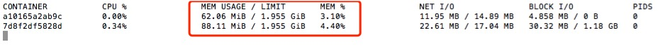
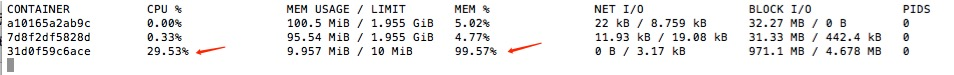
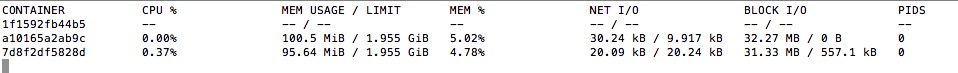

通过docker在服务器上部署项目，常常会出现内存不够使用的情况，导致程序挂掉了。
可能的原因是，使用docker启动container时，没有使用命令对其进行内存分配。
通过docker stats命令，可以看到，每个container默认分配了2G的内存，同时也能发现，有的container根本用不到这么大的内存。

去Docker官网，找到了限制内存的方法，如下：
一、-m和–memory-swap命令
1 | docker run -it -m 10M --memory-swap 20M ubuntu:14.04 /bin/bash |
这个命令的意思是，限制container只能使用10M的内存+10M的swap空间。
但我在使用这个命令时，出现了报错：1
WARNING: Your kernel does not support swap limit capabilities, memory limited without swap.
使用docker ps命令发现，container正常跑起来了

为了能正常使用–memory-swap命令，找了下解决办法，不过需要重启服务器才能生效To enable memory and swap on system using GNU GRUB (GNU GRand Unified Bootloader), do the following:
Log into Ubuntu as a user with sudo privileges.
Edit the /etc/default/grub file.
Set the GRUB_CMDLINE_LINUX value as follows:
GRUB_CMDLINE_LINUX="cgroup_enable=memory swapaccount=1"
Save and close the file.
Update GRUB.
$ sudo update-grub
Reboot your system.
重启完之后，再重新跑以上命令，发现container跑起来了，不过过了一会，就因为内存不够挂掉了。

二、-m命令
1 | docker run -it -m 20M ubuntu:14.04 /bin/bash |
这个命令只使用了-m参数，作用是限定了这个容器只能使用20M的内存以及20M的swap存储